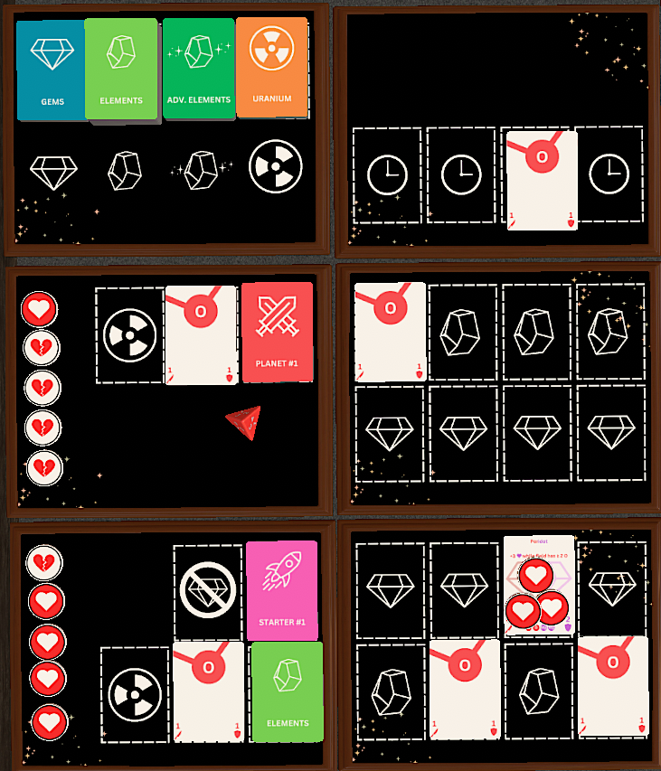
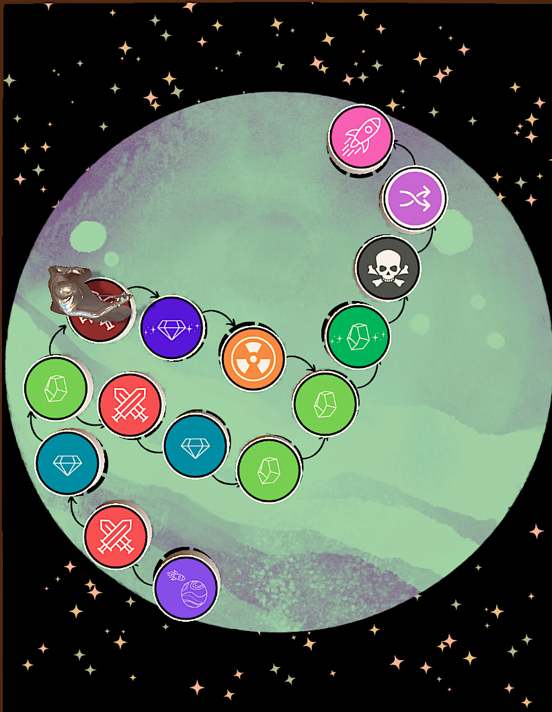
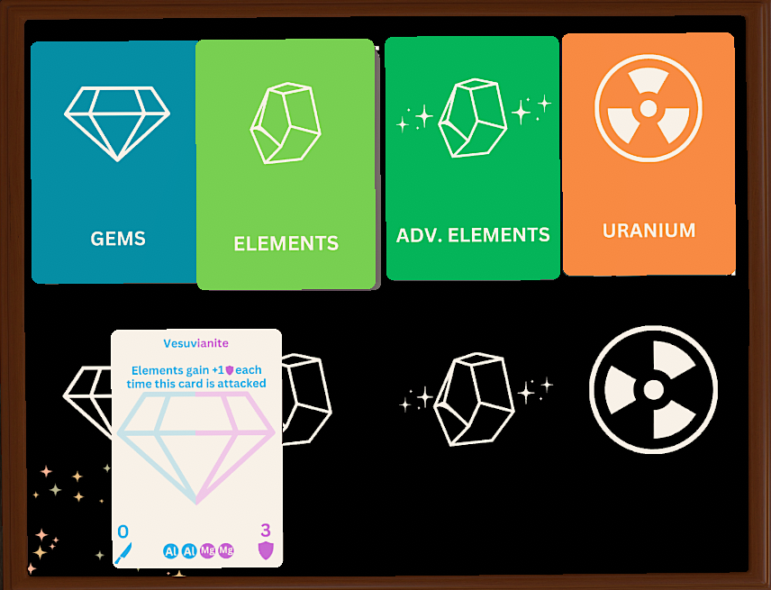

Gem Breaker
A space-faring rule-bending deck-building singleplayer board game.
Highlights



Role: Designer
My focus when developing this project was on simple systems that could interact to create emergent complexity. One basic design philosophy underlies the entire game: every card should alter the rules in some small way. This was an individual project, meaning I designed all systems and created all assets.
Although the individual systems in this game are simple, they interact in a complex enough way that playtesting this game physically was difficult. Creating enough cards to build an interesting deck quickly used an entire stack of sticky notes and got away from me. Instead, I learned to use Tabletop Simulator and designed a workflow that allowed for quick iteration and easy value tweaks.
Takeaway: Designing large systems that interact in complex ways requires diligent organization and a clean workflow.